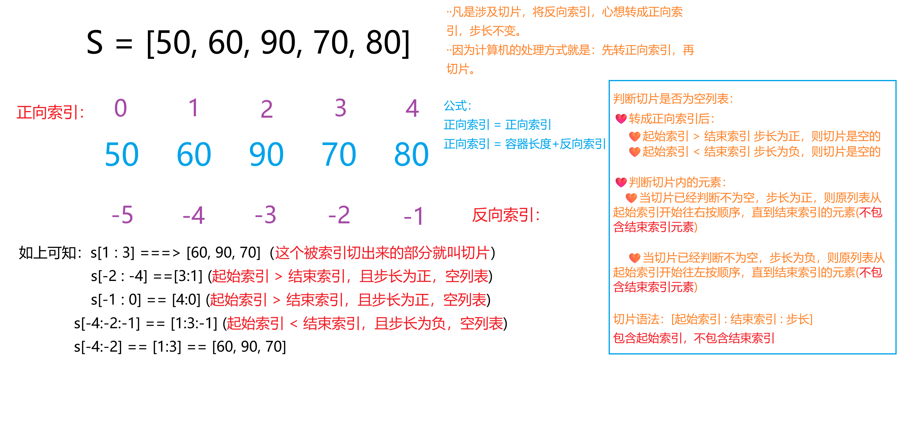
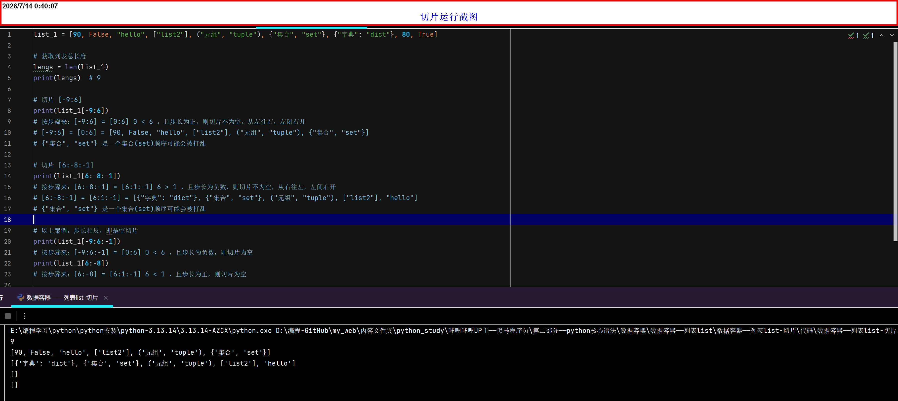

列表list-切片
课堂笔记
- 切片：是对操作的数据截取其中一部分的操作。
- 语法：
字面量 = 原容器[起始索引 : 结束索引 : 步长] - 与
range一样，包前不包后，左闭右开 - 开始索引未指定默认是
0 - 结束索引未指定默认是容器长度
- 步长默认是：
1，当步长设置为0直接报错 - 特殊写法：
::、0:都表示切片整个列表，正向。::-1表示切片整个列表，并反向 - 可以切片的的容器必须是：有序(支持下标)的
- 所以可切片的容器有：
list、tuple、str、(以及 range 等序列类型），不能切片的有：dict、set(无序的) -
自行总结，关于切片的知识
-
步骤一：
- 计算机关于切片的工作原理：会先将起始索引和结束索引，转成正向索引，步长不变
- 公式1：正向索引 = 正向索引
- 公式2：正向索引 = 容器长度 + 反向索引
-
步骤二(判断是否为空切片)：
- 都理解为正向索引后：
- 起始索引 > 结束索引，步长为正数，且切片不与原列表产生任何交集，则为空切片(切片容器与原容器一致)
- 起始索引 < 结束索引，步长为负数，且切片不与原列表产生任何交集，则为空切片(切片容器与原容器一致)
- 当切片范围被裁剪后为空
即起始索引 == 结束索引）时，返回空列表。
-
步骤三(推算出切片内元素)：
- 起始索引 > 结束索引，且步长为为负数，则从起始索引开始往左按顺序，直到结束索引停止(注意左闭右开)
- 起始索引 < 结束索引，且步长为为正数，则从起始索引开始往右按顺序，直到结束索引停止(注意左闭右开)
- 总结：切片取值时，先裁剪索引到有效边界。如果裁剪后的范围不为空，则返回交集部分；如果裁剪后的范围为空，则返回空列表。
-
-


| 特殊写法 | 含义 | 示例（s = [10,20,30,40,50]） |
|---|---|---|
[:] 或 [::] |
正向整个列表 | [10,20,30,40,50] |
[0:] |
从索引0到末尾 | [10,20,30,40,50] |
[::-1] |
反向整个列表 | [50,40,30,20,10] |
[::2] |
正向每隔一个取一个 | [10,30,50] |
[::-2] |
反向每隔一个取一个 | [50,30,10] |
[2::-1] |
从索引2向左取到开头 | [30,20,10] |
[:2:-1] |
从末尾向左取到索引2（不包含索引2） | [50,40] |
切片的作用
访问范围内的元素
- 单纯使用切片，打印，结果是原列表被切的部分
替换切片在原列表的元素
- 当访问切片后，又重新赋值
- 情况一：重新赋值的元素与切片元素，数量一致，则按顺序重新给切片依次重新赋值，[视觉效果(原列表长度与原来一致)]
-
情况二：重新赋值的元素与切片元素，数量不一致，完全替换，
多的情况[视觉效果(原列表长度增加)]、
少的情况[视觉效果(原列表长度减少)] - 其实只要理解：切片重新赋值后，将完全替换原列表的切片部分
- 切片赋值会先删除切片范围内的元素，然后在同一位置插入新元素。 这也是为什么长度会变化的原因
- 重新赋值，更改原列表，没有返回值
切片报错与不报错的场景
- 切片取值：完全超出范围时返回空列表，不会报错。
- 切片赋值：如果切片范围完全超出列表边界，会报错（因为赋值操作会尝试在不存在的位置插入元素）。[
indexError: cannot assign to a slice that is completely out of bounds]